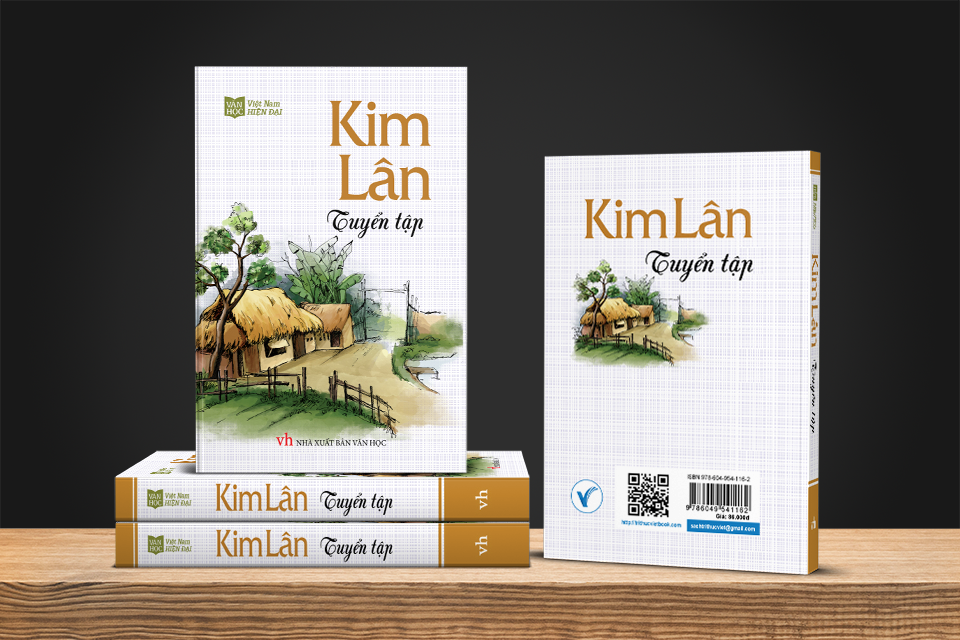

Đôi nét giới thiệu về nhà văn Kim Lân
Kim Lân (1920 – 2007) là một cây bút truyện ngắn danh tiếng của văn học Việt Nam hiện đại. Mặc dù sự nghiệp văn học của nhà văn tuy không đồ sộ nhưng lại rất đặc sắc và khó trộn lẫn. Trong đó, một số truyện ngắn của ông được xếp vào hàng “kinh điển” của văn xuôi Việt Nam thế kỷ XX.
Vốn là “con đẻ” của đồng ruộng, cho nên mỗi khi cầm bút, Kim Lân luôn viết về cuộc sống và con người ở nông thôn bằng những tình cảm nồng hậu, yêu thương quý trọng và tấm lòng chân thành, mộc mạc nhất.

Bởi vậy, Kim Lân được nhắc đến nhiều hơn cả với những để tài độc đáo như tái hiện những cảnh đói chết, nghèo nàn lam lũ hay cả những nét sinh hoạt văn hóa phong phú ở các vùng thôn quê ( đánh vật, chọi gà, thả chim…) và qua đó biểu hiện một phần vẻ đẹp tâm hồn của người nông dân trước Cách mạng tháng Tám – những người sống cực nhọc, khổ nghèo nhưng vẫn yêu đời, trong sáng, tài hoa.
Với tư cách là một nhà văn, Kim Lân luôn viết kỹ, viết từ gan ruột, không chấp nhận sự nhạt nhẽo, sự giả tạo trong văn học. Ông chính là mẫu nhà văn “Quý hồ tinh bất quý hồ đa”. Cũng chính vì vậy, Kim Lân giống như một loại đồ cổ quý hiếm cất giữ trong đó nhiều bụi vàng văn hóa thẳm sâu của nền văn minh sông Hồng. Đúng như nhà văn Nguyên Hồng đã nói: “Kim Lân là nhà văn một lòng đi về với “đất” với “người” với “thuần hậu nguyên thủy” của cuộc sống nông thôn.
Nhà văn Kim lân từng nói
“…Khi tôi viết, ý tưởng thường trực trong tôi là những người đói dù thế nào đi nữa vẫn luôn luôn khao khát cuộc sống tốt hơn, vẫn tin tưởng một cách mơ hồ vào cuộc sống tương lai”